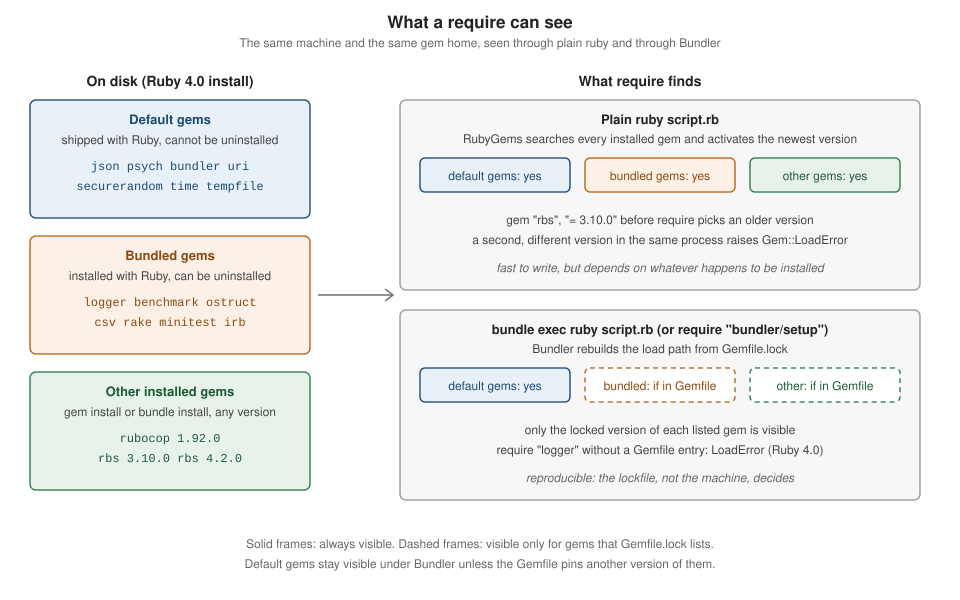

RubyGems and Bundler
|
This content was generated with the assistance of AI and should be verified against the official documentation before being relied on in production. |
This page is written against Ruby 4.0 (4.0.7, checked on 2026-10-18), which ships RubyGems 4.0 and Bundler 4.0 (4.0.20 on the machine used for the examples); features newer than Ruby 3.0 name the version that introduced them.
Ruby libraries are packaged and distributed as gems. Two tools that come with Ruby manage them: RubyGems installs individual gems, provides the gem command and extends require so that installed gems can be loaded, and Bundler tracks the exact set of gems that one project depends on, described in a Gemfile and frozen in a Gemfile.lock. RubyGems.org is the community registry where gems are published and downloaded.
This page is the most detailed one in the tooling section of the reference. It starts with the anatomy of a gem and the gem command, explains versions and how require activates a gem, then spends most of its length on the two things that cause the most confusion: the difference between default gems and bundled gems (and why require "logger" fails inside a bundle in Ruby 4.0), and the Bundler workflow (Gemfile, Gemfile.lock, resolution, bundle exec, single-file scripts).
It closes with configuration, deployment and CI, supply-chain security, what changed in RubyGems and Bundler 4, and a troubleshooting table of real error messages.
Writing a gem of your own (bundle gem, gemspec fields, gem build, gem push, Rake) is covered in
Creating and Publishing Gems, and Rake. The part of the standard library that is
a default or bundled gem is toured in Standard Library Tour, how require and autoload find files in
Code Loading: require and autoload, the ruby options and environment variables that influence gems in
Ruby Command Line and Environment, and the wider security picture in Security.
Installing Ruby itself and the version managers are in Getting Started; the Ruby release schedule is in
Versions, Releases and Compatibility. For the same ideas in other languages see
Python virtual environments and packaging,
Cargo and workspaces,
Go modules and dependency management,
Composer and packages,
JavaScript bundling and npm publishing and
JVM dependency management fundamentals; a comparison table is near the end of this page.
Every Ruby example on this page was syntax-checked with ruby -wc, run with ruby -w on Ruby 4.0.7 (RubyGems 4.0.20, Bundler 4.0.20) and linted with RuboCop 1.92 using the configuration of the running shelf gem (target Ruby 4.0, double-quoted strings).
The output shown in # => comments and in the output blocks is the real output, with long paths abbreviated ($RUBY is the Ruby installation prefix, ~ the home directory).
The commands that download from RubyGems.org (gem install, bundle install, bundle update, bundle add, gem push) are shown without output, because the examples were produced offline against the gems already installed
(bundle install --local); every other command was run, and a few outputs depend on the machine (they say so).
The moving parts
Four things are easy to confuse. The table separates them; later sections go through each one.
| Piece | What it is | Where you meet it |
|---|---|---|
RubyGems |
The package manager library and the |
|
Bundler |
A dependency manager for one project. It reads a |
|
RubyGems.org |
The public registry and website. Serves gem files, the compact index that clients use to resolve, the API for publishing, accounts, API keys, MFA and trusted publishers. |
|
The standard library gems |
Parts of Ruby’s standard library that are packaged as gems: default gems (always requirable) and bundled gems (installed with Ruby, but not requirable inside a bundle unless the Gemfile lists them). |
|
The versions of RubyGems and Bundler follow the Ruby release. The table lists what was installed with the Ruby patch releases used to check this page.
| Ruby | RubyGems | Bundler |
|---|---|---|
3.2.11 |
3.4.19 |
2.4.19 |
3.3.12 |
3.5.22 |
2.5.22 |
3.4.11 |
3.6.9 |
2.6.9 |
4.0.7 |
4.0.20 |
4.0.20 |
Both tools can be updated independently of Ruby: gem update --system installs the newest RubyGems, and gem install bundler installs a newer Bundler next to the default one, which cannot be uninstalled.
A project selects its Bundler through the BUNDLED WITH section of its lockfile (see Gemfile.lock).
What a gem is
A gem is a packaged Ruby library or program with a name, a version and a platform, plus the metadata that lets tools install it and its dependencies. The name and version identify it (rake 13.3.1); the platform says where it runs: ruby means the gem is delivered as Ruby source (or as C source that is compiled at install time) and installs everywhere, while a concrete platform such as arm64-darwin or x86_64-linux marks a precompiled binary. The full name of a file is name-version.gem or name-version-platform.gem.
Inside a .gem file (a plain tar archive) are three entries, which the example below lists after building the running shelf gem with gem build: metadata.gz (the gemspec, serialized as YAML), data.tar.gz (the files of the gem) and checksums.yaml.gz (SHA-256 and SHA-512 digests of the other two).
gem build shelf.gemspec
tar -tf shelf-0.1.0.gem
tar -xOf shelf-0.1.0.gem metadata.gz | gunzip | head -22 Successfully built RubyGem
Name: shelf
Version: 0.1.0
File: shelf-0.1.0.gem
metadata.gz
data.tar.gz
checksums.yaml.gz
--- !ruby/object:Gem::Specification
name: shelf
version: !ruby/object:Gem::Version
version: 0.1.0
platform: ruby
authors:
- Example Author
bindir: exe
cert_chain: []
date: 1980-01-02 00:00:00.000000000 Z
dependencies: []
executables:
- shelf
extensions: []
extra_rdoc_files: []
files:
- exe/shelf
- lib/shelf.rb
- lib/shelf/author.rbThe date 1980-01-02 is not a mistake: gem build uses a fixed timestamp so that building the same input twice produces byte-identical files (the SOURCE_DATE_EPOCH environment variable overrides it). The gem rebuild command uses this property to check that a published gem can be reproduced from its source. gem unpack extracts the data.tar.gz part, which is how you inspect what a gem really contains before using it.
Source: RubyGems Guides: What is a gem?
The gemspec
The gemspec is a Ruby file that returns a Gem::Specification. It declares the name, version, the files to package, the executables, the required Ruby version, the runtime and development dependencies and free-form metadata. Loading it does not build or install anything, so it is a safe way to read the metadata of a project.
The shelf scenario of this reference is a small catalogue library packaged as a gem; this is its gemspec:
# frozen_string_literal: true
require_relative "lib/shelf/version"
Gem::Specification.new do |spec|
spec.name = "shelf"
spec.version = Shelf::VERSION
spec.authors = ["Example Author"]
spec.summary = "A small library catalogue."
spec.homepage = "https://example.com/shelf"
spec.license = "MIT"
spec.required_ruby_version = ">= 4.0"
spec.metadata["rubygems_mfa_required"] = "true"
spec.files = Dir["lib/**/*.rb", "exe/*", "sig/**/*.rbs"]
spec.bindir = "exe"
spec.executables = ["shelf"]
spec.require_paths = ["lib"]
endTwo fields deserve a comment. spec.required_ruby_version keeps the gem from installing on a Ruby it was not written for: a Ruby older than 4.0 refuses to install it (and Bundler refuses to resolve it). spec.metadata["rubygems_mfa_required"] makes RubyGems.org demand multi-factor authentication from every owner who pushes a version (see Security). The remaining fields are explained in the page on creating gems.
Loading the gemspec from Ruby shows the same data without building anything:
# frozen_string_literal: true
# A gemspec is Ruby code that returns a Gem::Specification. Loading it does
# not build or install anything.
spec = Gem::Specification.load("shelf.gemspec")
puts spec.full_name
puts spec.summary
p spec.require_paths
p spec.executables
p spec.files.size
p spec.required_ruby_version.to_s
p spec.metadata
p spec.runtime_dependencies
p spec.development_dependencies
p spec.platform
p spec.licensesOutput, run in the shelf directory:
shelf-0.1.0
A small library catalogue.
["lib"]
["shelf"]
11
">= 4.0"
{"rubygems_mfa_required" => "true"}
[]
[]
"ruby"
["MIT"]A gem usually follows one layout: lib/ holds the code (and the main file that matches the gem name), exe/ or bin/ the executables, sig/ optional RBS signatures, test/ or spec/ the tests, plus a Rakefile and the gemspec. Only the files listed in the gemspec are packaged; a broad glob can pick up local configuration, so prefer an explicit list.
The gem command
gem is the command-line front end of RubyGems. A short tour of the commands that matter day to day follows; gem help commands lists all of them and gem help COMMAND documents one. Commands may be abbreviated when unambiguous (gem i rake is gem install rake).
| Command | Purpose |
|---|---|
|
Download a gem and its dependencies from the configured sources and install them. Options: |
|
Remove a gem. |
|
List installed gems. |
|
Details, or the whole gemspec as YAML ( |
|
List the files of an installed gem, print the path that |
|
Show the dependencies of an installed gem; |
|
Print the RubyGems environment: version, directories, platforms, sources, configuration. |
|
List, |
|
Query RubyGems.org, or download a |
|
Update installed gems, or RubyGems itself (which downloads the |
|
Show gems with newer versions on the source, remove old versions that nothing needs ( |
|
Publishing: build a |
|
Run the executable of a gem, installing the gem first if it is missing. |
|
Reproduce a published gem, manage signing certificates, verify installed gems, open a gem in an editor, print a lock list, regenerate documentation. |
RubyGems 4 removed gem query (use gem search or gem list) and the gem install --default option, and moved gem generate_index, gem mirror and gem server out of the core into separate gems (gem help commands still lists them with a "requires rubygems-…" note).
Looking at what is installed
These commands only read the local gem installation, so they run without network access. The first one lists the installed versions of one gem; rbs happens to have two on the machine used here.
gem list -a rbs
gem list --local '^(logger|json|rake)$'
gem which rake
gem contents rake | head -3
gem dependency rubocop-ast
gem info jsonrbs (4.2.0, 3.10.0)
json (default: 2.18.0)
logger (1.7.0)
rake (13.3.1)
$RUBY/lib/ruby/gems/4.0.0/gems/rake-13.3.1/lib/rake.rb
$RUBY/lib/ruby/gems/4.0.0/gems/rake-13.3.1/History.rdoc
$RUBY/lib/ruby/gems/4.0.0/gems/rake-13.3.1/MIT-LICENSE
$RUBY/lib/ruby/gems/4.0.0/gems/rake-13.3.1/README.rdoc
Gem rubocop-ast-1.50.0
parser (>= 3.3.7.2)
prism (~> 1.7)
json (2.18.0)
Author: Florian Frank
Homepage: https://github.com/ruby/json
License: Ruby
Installed at (default): $RUBY/lib/ruby/gems/4.0.0
JSON Implementation for RubyNotice json (default: 2.18.0) and Installed at (default): json is a default gem, while logger and rake are ordinary gems that happen to be installed with Ruby (bundled gems). The difference gets its own section below.
Installing and removing
gem install rake # newest version from the configured sources
gem install rake -v '~> 13.0' # newest version matching a requirement
gem install rubocop --no-document # skip RDoc and ri generation
gem install nokogiri --platform ruby # force the source (non-precompiled) variant
gem install --local ./shelf-0.1.0.gem # install a gem file, no network
gem uninstall rake -v 13.3.1
gem update --system # newest RubyGemsThese commands are not run on this page because they download from RubyGems.org (except the local install). On a plain install RubyGems puts the gem under the gem home (next section), runs any native extension build, installs documentation unless told not to, and writes executables into the executable directory.
gem install resolves the dependencies of the one gem being installed, installs the missing ones, and never touches a project: a gem installed with gem install becomes visible to every Ruby script on that Ruby installation, and sudo gem install is best avoided (see below).
Source: RubyGems Guides: RubyGems basics
Where gems live: the gem home
gem env prints the directories RubyGems uses. These are the entries that matter, on the machine used for this page:
gem env
gem env home
gem env gempathRubyGems Environment:
- RUBYGEMS VERSION: 4.0.20
- RUBY VERSION: 4.0.7 (2026-09-15 patchlevel 0) [arm64-darwin23]
- INSTALLATION DIRECTORY: $RUBY/lib/ruby/gems/4.0.0
- USER INSTALLATION DIRECTORY: ~/.gem/ruby/4.0.0
- CREDENTIALS FILE: ~/.local/share/gem/credentials
- RUBY EXECUTABLE: $RUBY/bin/ruby
- GIT EXECUTABLE: /usr/bin/git
- EXECUTABLE DIRECTORY: $RUBY/bin
- SPEC CACHE DIRECTORY: ~/.gem/specs
- SYSTEM CONFIGURATION DIRECTORY: $RUBY/etc
- RUBYGEMS PLATFORMS:
- ruby
- arm64-darwin-23
- GEM PATHS:
- $RUBY/lib/ruby/gems/4.0.0
- ~/.gem/ruby/4.0.0
- GEM CONFIGURATION:
- :update_sources => true
- :verbose => true
- :backtrace => true
- :bulk_threshold => 1000
$RUBY/lib/ruby/gems/4.0.0
~/.gem/ruby/4.0.0:$RUBY/lib/ruby/gems/4.0.0The installation directory (the gem home) is where gem install puts gems. Inside it, every version of every gem gets its own directory under gems/ (gems/rake-13.3.1/), with the specification under specifications/, the downloaded .gem under cache/, compiled extensions under extensions/<platform>/<ruby abi>/ and executable wrappers under bin/. Because each version has its own directory, any number of versions of the same gem live side by side. The path contains the Ruby ABI (4.0.0) because compiled extensions only load into the Ruby they were built for.
-
GEM_HOMEoverrides where gems are installed;GEM_PATHoverrides the list of directories searched when loading them (:separated on Unix,;on Windows).gem env gemdirandgem env gempathprint the effective values for scripts. -
When the installation directory is not writable (a system Ruby),
gem installfalls back to a user installation in~/.gem/ruby/<abi>(or~/.local/share/gem/ruby/<abi>when no~/.gemexists);gem install --user-installasks for it. The user directory is onGEM_PATHby default, but itsbindirectory is not onPATH, which is why a gem can install fine and the command is still "not found". Add$(ruby -e 'puts Gem.user_dir')/bintoPATH. -
Avoid
sudo gem install: it scatters root-owned files through system directories. A user installation or a version manager achieves the same goal safely. -
Version managers (mise, rbenv, chruby, asdf, RVM) install each Ruby under its own prefix, each with its own gem home, so switching Ruby switches the set of installed gems and reinstalling is expected (compiled extensions would not load into another Ruby anyway). chruby sets
GEM_HOMEto a per-version directory under~/.gem. -
Bundler, unless told otherwise, installs into the same gem home (
bundle installandgem installshare one pool);bundle config set --local path vendor/bundlegives a project its own isolated location (see Configuration).
Sources and RubyGems.org
gem sources lists where gems are fetched from. With no configuration it reports the default, https://rubygems.org/:
gem sources*** NO CONFIGURED SOURCES, DEFAULT SOURCES LISTED BELOW ***
https://rubygems.org/gem sources --add URL appends a source (a private gem server, a mirror, Gemstash, Artifactory, GitHub Packages) and gem install --source URL uses one for a single command. Adding sources to a global list has a security consequence that Bundler 4 closes for projects (see the Gemfile): when two sources serve a gem with the same name, which one wins is a matter of ordering, which is the root of dependency confusion attacks. For application dependencies prefer Bundler’s per-source blocks.
RubyGems.org serves gem files and, for resolution, the compact index: a set of plain files (/versions, /info/<gem>) that list every version of every gem with its dependencies and requirements, which Bundler downloads incrementally and caches under ~/.bundle/cache; that is why bundle install is fast after the first run. (The gem command of RubyGems 4.0 still uses the older specs files cached under ~/.gem/specs; it moves to the compact index in the RubyGems 4.1 beta.)
Publishing goes through an authenticated API (API keys with scopes, MFA, trusted publishers). A version published to RubyGems.org can never be replaced; gem yank removes a version from the index and the file, but its number is gone for good, and anything pushed (including accidental secrets) must be treated as public. The registry also serves rate-limited public JSON APIs.
Configuration with .gemrc and environment variables
A .gemrc file changes gem defaults you would otherwise repeat. It is a YAML hash: symbol keys (a leading colon) set RubyGems options, and string keys naming a command (or gem for all commands) set default arguments.
:sources:
- https://rubygems.org/
:backtrace: true
:concurrent_downloads: 16
install: --no-document
update: --no-documentWith this file gem install rails behaves as if --no-document had been typed. RubyGems merges the system file (gemrc in the system configuration directory, typically /etc/gemrc), the user file (~/.gemrc, or $XDG_CONFIG_HOME/gem/gemrc when it does not exist) and the files named in GEMRC; gem --config-file FILE uses a specific file and gem --norc ignores them all. The option keys include :sources, :backtrace, :verbose, :update_sources, :concurrent_downloads (default 8), :global_gem_cache (share downloaded .gem files across Rubies, default false), :disable_default_gem_server, :gemhome, :gempath and :ssl_verify_mode, :ssl_ca_cert, :ssl_client_cert. API keys are not stored in .gemrc: they live in the credentials file shown by gem env (~/.gem/credentials or ~/.local/share/gem/credentials).
The environment variables that RubyGems reads are:
| Variable | Effect |
|---|---|
|
Install directory, and the directories searched for installed gems. |
|
Where specifications fetched from remote sources are cached ( |
|
Extra gemrc files to read. |
|
Path to a dependency file ( |
|
A requirement applied when the gem |
|
Timestamp used when packaging a gem, for reproducible |
|
Target server of |
|
Proxy used for gem servers. |
|
Silence the suggestion to run |
Bundler has its own configuration system (bundle config, BUNDLE_* variables) that does not read .gemrc.
Versions and requirements
A gem version is a string of numbers, dots and letters. RubyGems attaches no meaning to its parts; what a bump signifies is up to each gem. The convention that much of the ecosystem assumes is semantic versioning (MAJOR.MINOR.PATCH: patch for fixes, minor for compatible additions, major for breaking changes), but it is a convention, not a rule that RubyGems enforces, and Ruby itself does not follow it (it releases a new minor version every 25 December and allows incompatible changes in it).
Gem::Version compares versions the way tools need:
-
A version splits into segments at dots and at letter/digit boundaries (
1.0.0.beta10is1, 0, 0, "beta", 10). Numeric segments compare as numbers (beta10sorts afterbeta9,1.10after1.9), string segments compare alphabetically and always sort before numeric ones. -
A version containing a letter is a prerelease (
2.0.0.rc1,1.5.0.beta.3) and sorts before the release it leads up to.alpha,beta,preandrchappen to be in alphabetical order, so sticking to them keeps a series sorted. -
Trailing zeros are ignored (
1.0equals1.0.0). A hyphen reads as.pre.(1.0.0-rc1becomes1.0.0.pre.rc1). SemVer build metadata such as+001is not valid. -
A published version number can never be reused, even after a yank.
A requirement (Gem::Requirement) is a list of operator and version pairs, and a dependency (Gem::Dependency) couples a gem name with a requirement and a type (:runtime or :development). These are the operators, in Gemfile and gemspec syntax:
| Operator | Meaning |
|---|---|
|
Exactly this version. |
|
Any version except this one. |
|
Greater than, at least, less than, at most. |
|
Allows the last given digit to grow, but not the ones before it. |
A list of requirements means "all of them": gem "rack", ">= 2.2", "< 4.0", "!= 3.0.1". Pick the level of change you are prepared to absorb automatically: ~> 2.2 accepts 2.9.9, while ~> 2.2.0 stays inside 2.2.x.
# frozen_string_literal: true
# Versions compare segment by segment, never as strings.
p Gem::Version.new("1.10.0") > Gem::Version.new("1.9.3") # => true
p "1.10.0" > "1.9.3" # => false
p Gem::Version.new("4.0.7").segments # => [4, 0, 7]
p Gem::Version.new("1.0") == Gem::Version.new("1.0.0") # => true
p Gem::Version.new("2.0.0.rc1").prerelease? # => true
p Gem::Version.new("2.0.0.rc1") < Gem::Version.new("2.0.0") # => true
sorted = %w[1.0.0.rc1 1.0.0.beta10 1.0.0 1.0.0.beta9 0.9].map { |v| Gem::Version.new(v) }.sort
puts sorted.join(" ") # => 0.9 1.0.0.beta9 1.0.0.beta10 1.0.0.rc1 1.0.0
# A requirement is a list of operator and version pairs.
req = Gem::Requirement.new("~> 1.2.3")
puts req # => ~> 1.2.3
p req.satisfied_by?(Gem::Version.new("1.2.9")) # => true
p req.satisfied_by?(Gem::Version.new("1.3.0")) # => false
p Gem::Requirement.new("~> 1.2").satisfied_by?(Gem::Version.new("1.9")) # => true
p Gem::Requirement.new("~> 1").satisfied_by?(Gem::Version.new("1.9")) # => true
p Gem::Requirement.new(">= 2", "< 4").as_list # => [">= 2", "< 4"]
puts Gem::Requirement.default # => >= 0
# Prerelease versions satisfy a requirement only when it names a prerelease.
p Gem::Requirement.new(">= 1.0").satisfied_by?(Gem::Version.new("2.0.0.rc1")) # => true
p Gem::Dependency.new("shelf", ">= 1.0").match?("shelf", "2.0.0.rc1") # => false
p Gem::Dependency.new("shelf", ">= 1.0.0.rc1").match?("shelf", "2.0.0.rc1") # => true
# A dependency couples a gem name with a requirement and a type.
dep = Gem::Dependency.new("minitest", "~> 6.0")
puts dep # => minitest (~> 6.0)
p dep.type # => :runtime
p dep.match?("minitest", "6.0.0") # => true
p dep.match?("minitest", "7.0.0") # => falseOutput of ruby -w versions.rb (the # => comments are those values):
true
false
[4, 0, 7]
true
true
true
0.9 1.0.0.beta9 1.0.0.beta10 1.0.0.rc1 1.0.0
~> 1.2.3
true
false
true
true
[">= 2", "< 4"]
>= 0
true
false
true
minitest (~> 6.0)
:runtime
true
falseNotice the prerelease rule: Gem::Requirement#satisfied_by? only compares numbers, so >= 1.0 is satisfied by 2.0.0.rc1, but Gem::Dependency#match?, which is what installers and resolvers use, skips prereleases unless the requirement itself names one. That is why gem install shelf installs the newest stable release, gem install shelf --pre allows prereleases, and Bundler considers a prerelease only for a requirement such as gem "shelf", ">= 1.0.0.rc1".
Constraints in a gemspec and in a Gemfile pull in opposite directions
A gemspec describes a gem that will be combined with every other gem in an application, so its constraints should stay wide: prefer an optimistic lower bound (spec.add_dependency "library", ">= 2.2") over a pessimistic one ("~> 2.2"), which locks the whole dependency graph of every application that uses the gem and blocks them from moving to the dependency’s next major version even if everything would work. Reserve ~> in a gemspec for a dependency that has announced an incompatible change.
An application’s Gemfile can afford looser constraints, because the exact versions come from Gemfile.lock; a constraint such as gem "rails", "~> 8.1" there only bounds what bundle update may do. Constraints encode trust in an author’s numbering, which is a courtesy and not a contract; the lockfile and your test suite do the real protecting.
How require finds a gem
Ruby loads RubyGems at start-up, and RubyGems replaces Kernel#require. When the file to require is not already on $LOAD_PATH, RubyGems searches the installed gems for one that contains it, picks the newest version, activates it (adds its lib directory and those of its dependencies to $LOAD_PATH) and then performs the ordinary require. Activation is per process and exclusive: several versions of a gem can be installed, but only one can be active, and activation also sets Gem.loaded_specs. To load something other than the newest version, call Kernel#gem before the require.
# frozen_string_literal: true
# Two versions of one gem can sit side by side on disk.
installed = Gem::Specification.find_all_by_name("rbs").map { |spec| spec.version.to_s }
p installed.sort.reverse # => ["4.2.0", "3.10.0"]
# Nothing is activated until the code asks for it.
p Gem.loaded_specs.key?("rbs") # => false
# Kernel#gem activates an exact version before require runs.
gem "rbs", "= 3.10.0"
p Gem.loaded_specs.fetch("rbs").version.to_s # => "3.10.0"
lib_dirs = $LOAD_PATH.grep(/rbs-/).map { |path| path.sub(Gem.dir, "$GEM_HOME") }
p lib_dirs.first # => "$GEM_HOME/gems/rbs-3.10.0/lib"
# Only one version per gem can be active in a process.
begin
gem "rbs", "= 4.2.0"
rescue Gem::LoadError => e
puts e.class # => Gem::LoadError
puts e.message # => can't activate rbs-4.2.0, already activated rbs-3.10.0
end
# Asking for a gem that is not installed raises the same family of errors.
begin
gem "no_such_gem"
rescue Gem::MissingSpecError => e
puts e.class # => Gem::MissingSpecError
puts e.message.lines.first # => Could not find 'no_such_gem' (>= 0) among 105 total gem(s)
end
# Where does a gem live? The number of installed gems depends on the machine.
puts Gem::Specification.find_by_name("rake").full_gem_path.sub(Gem.dir, "$GEM_HOME")
# => $GEM_HOME/gems/rake-13.3.1Output of ruby -w activation.rb (the gem count depends on the machine):
["4.2.0", "3.10.0"]
false
"3.10.0"
"$GEM_HOME/gems/rbs-3.10.0/lib"
Gem::LoadError
can't activate rbs-4.2.0, already activated rbs-3.10.0
Gem::MissingSpecError
Could not find 'no_such_gem' (>= 0) among 105 total gem(s)
$GEM_HOME/gems/rake-13.3.1Gem::LoadError ("can’t activate …, already activated …") is the error behind version conflicts in plain scripts: two gems, directly or through their dependencies, demanded different versions of a third one. Gem::MissingSpecError (a subclass) means no installed version satisfies the request, and a plain LoadError ("cannot load such file") means no installed gem contains the file at all. gem which NAME prints the path a require would load.
Compiled extensions are found through the gem’s extensions directory (the second $LOAD_PATH entry of a gem with an extension). Default gems live in specifications/default/ and load without being installed; a newer version installed from RubyGems.org takes precedence over the shipped one.
Source: Ruby 4.0 documentation: Kernel#gem and Gem::LoadError
Under Bundler the picture changes: require "bundler/setup" (done for you by bundle exec) rebuilds the load path from the lockfile so that only the locked versions of the gems in the bundle are visible. The rest of the gem home stays installed but cannot be required (see Running code in the bundle).
Default gems and bundled gems
Much of Ruby’s standard library is packaged as gems that can be updated independently of Ruby. They fall into two classes that behave differently under Bundler, and mixing them up is the most common reason for a LoadError after upgrading Ruby.
| Default gems | Bundled gems | |
|---|---|---|
Shipped with Ruby |
Yes |
Yes (installed with Ruby) |
Can be uninstalled |
No |
Yes |
Can be updated |
Yes ( |
Yes |
Listed by |
As |
As a normal gem |
Always requirable |
Yes, also inside a bundle |
Outside a bundle only. Inside a bundle only if the Gemfile (or a gemspec dependency) lists it. |
Maintained by |
The Ruby core team |
Usually external maintainers |
Examples (Ruby 4.0) |
|
|
A default gem can always be required without a Gemfile entry; it is what Ruby ships unless the Gemfile (or gem install) provides a newer version. A bundled gem is installed alongside Ruby so that scripts can use it, but Bundler’s job is to make the Gemfile the single source of truth for what a project can load, so it hides everything that is not listed, bundled gems included.
# frozen_string_literal: true
# A default gem ships inside Ruby and cannot be uninstalled. Everything else
# in the list is an ordinary gem; the bundled ones were installed with Ruby.
names = %w[json psych bundler logger benchmark ostruct csv base64 irb rake minitest]
names.each do |name|
spec = Gem::Specification.find_by_name(name)
kind = spec.default_gem? ? "default" : "regular gem"
puts "#{name.ljust(10)} #{kind.ljust(12)} #{spec.version}"
end
# Core classes and removed libraries are not gems at all.
begin
Gem::Specification.find_by_name("set")
rescue Gem::MissingSpecError
puts "set core class since Ruby 4.0"
endOutput of ruby -w kinds.rb:
json default 2.18.0
psych default 5.3.1
bundler default 4.0.20
logger regular gem 1.7.0
benchmark regular gem 0.5.0
ostruct regular gem 0.6.3
csv regular gem 3.3.5
base64 regular gem 0.3.0
irb regular gem 1.16.0
rake regular gem 13.3.1
minitest regular gem 6.0.0
set core class since Ruby 4.0(regular gem here means "not a default gem": logger and the others are bundled gems; RubyGems itself does not record the difference, Gem::Specification#default_gem? is the only flag.) Set has been a core class since 4.0 and Pathname too, which is why neither needs a require or a gem any more; SortedSet was removed and lives in the community sorted_set gem.
Which libraries moved, and when
Libraries move from "default" to "bundled" in a Ruby release, announced one version ahead. The 3.3 and 3.4 notes list each batch; the table summarizes the moves that explain most upgrade breakage.
| Ruby | Default gems that became bundled gems |
|---|---|
3.1 |
|
3.3 |
|
3.4 |
|
4.0 |
|
4.1 (expected 2026-12-25) |
|
Source: Ruby 3.1 NEWS, 3.3 NEWS, 3.4 NEWS and 4.0 NEWS
What happens when a bundle requires a bundled gem
The behavior changes per Ruby release, which is why code that worked on 3.3 breaks on 4.0. The same empty Gemfile (source "https://rubygems.org" and no gems) and the same one-line script, bundle exec ruby -e "require 'base64'", run on three Rubies:
# Ruby 3.3.12: only a warning, the require works
-e:1: warning: base64 was loaded from the standard library, but will no longer be part of the default gems starting from Ruby 3.4.0.
You can add base64 to your Gemfile or gemspec to silence this warning.
loaded
# Ruby 3.4.11: base64 moved in 3.4, so the same line is an error ...
-e:1: warning: base64 was loaded from the standard library, but is not part of the default gems starting from Ruby 3.4.0.
You can add base64 to your Gemfile or gemspec to silence this warning.
.../lib/ruby/3.4.0/bundled_gems.rb:82:in 'Kernel.require': cannot load such file -- base64 (LoadError)
# ... while logger (a 4.0 move) only warns on 3.4
-e:1: warning: logger was loaded from the standard library, but will no longer be part of the default gems starting from Ruby 4.0.0.
You can add logger to your Gemfile or gemspec to silence this warning.
loadedOn Ruby 4.0.7 every library moved in 3.4 and 4.0 is an error under Bundler, with the message that names the fix:
-e:1: warning: logger used to be loaded from the standard library, but is not part of the default gems since Ruby 4.0.0.
You can add logger to your Gemfile or gemspec to fix this error.
$RUBY/lib/ruby/4.0.0/bundled_gems.rb:60:in 'Kernel.require': cannot load such file -- logger (LoadError)
-e:1: warning: csv used to be loaded from the standard library, but is not part of the default gems since Ruby 3.4.0.
You can add csv to your Gemfile or gemspec to fix this error.
$RUBY/lib/ruby/4.0.0/bundled_gems.rb:60:in 'Kernel.require': cannot load such file -- csv (LoadError)json and set (a default gem and a core class) load without any entry, as does everything else that is a default gem. The fix is to declare the dependency:
-
In an application, add the gem to the
Gemfile(gem "logger", "~> 1.7"), runbundle install, and commit the updatedGemfile.lock. -
In a gem, add it to the gemspec (
spec.add_dependency "logger"), because the Gemfile of a gem is not shipped and an application that depends on the gem will not have the library otherwise. -
In a single-file script, list it in the
gemfileblock ofbundler/inline(see below). -
Outside Bundler (plain
ruby script.rb) nothing changes: the bundled gem is installed with Ruby and loads normally.
Two caveats. Older warnings are suppressed when the bootsnap gem is in use (the 3.3 notes recommend running once with DISABLE_BOOTSNAP=1 to see them). And tools often pull the missing library in indirectly: a gem that requires ostruct or logger without declaring it breaks in every bundle that lacks it, so the error can point into a dependency; the fix is still a Gemfile entry (and a bug report to the dependency).
Older tutorials describe benchmark, logger and ostruct as "part of the standard library". They are still shipped with Ruby 4.0, but as bundled gems that a bundle must list; see Standard Library Tour for the library by library table.

Source: RubyGems Guides: Default gems and bundled gems and stdgems.org (the lists per Ruby version)
Bundler: why it exists
gem install installs what you ask for and activates the newest installed version when you require. That is fine for a script and a poor foundation for an application: two machines that install the same gem names at different times get different versions, two applications on one machine want different versions of the same gem, and nothing records which combination last worked.
Bundler solves this with a declaration and a snapshot. The Gemfile declares what the project depends on (names, constraints, groups, sources); Bundler resolves one consistent set of versions that satisfies all of those constraints and all of the dependencies' own constraints, writes the exact result to Gemfile.lock, installs it, and from then on makes sure that running the project loads exactly that set. Every machine and every deploy that starts from the same lockfile runs the same code.
Source: RubyGems Guides: How to manage dependencies with Bundler and How to manage application dependencies with Bundler
The everyday loop has four steps: edit the Gemfile (or let bundle add do it), run bundle install (which re-resolves only what changed), commit Gemfile and Gemfile.lock, and run the project with bundle exec. The rest of this section of the page explains each piece.
The Gemfile
A Gemfile is Ruby code evaluated in a context that provides a small DSL. It lives in the project root; Bundler finds it by searching upward from the current directory (BUNDLE_GEMFILE overrides this and also sets the project root). bundle init writes a starter file. This is the Gemfile of the running shelf gem, the layout that bundle gem generates:
# frozen_string_literal: true
source "https://rubygems.org"
gemspec
gem "minitest", "~> 6.0"
gem "rake", "~> 13.0"
gem "rubocop", "~> 1.92", require: falsesource declares where gems come from, gemspec pulls the gem’s own gemspec in (its runtime dependencies in the default group, its development dependencies in the development group, and the gem itself as a path: dependency so tests can require it), and each gem line adds a dependency. As a rule the gemspec carries the runtime dependencies of a gem and the Gemfile carries its development tools (minitest, rake, rubocop), while an application declares everything in the Gemfile.
Sources
A Gemfile has exactly one global source, at the top: source "https://rubygems.org". To use another server for some gems, use a block form so that each gem is bound to one source:
# frozen_string_literal: true
source "https://rubygems.org"
# Every internal gem comes from the internal server and nowhere else.
source "https://gems.example.com" do
gem "shelf-internal", "~> 2.1"
end
# Straight from git, pinned by tag (use https or ssh, never git://).
gem "shelf-extras", git: "https://git.example.com/shelf/extras.git", tag: "v0.4.0"
# A public GitHub repository, by branch, through the :github shorthand.
gem "shelf-sqlite", github: "example/shelf-sqlite", branch: "main"
# A gem developed next to the application.
gem "shelf-theme", path: "../shelf-theme"
# A git repository that holds several gems: each one is found by its gemspec.
git "https://git.example.com/shelf/monorepo.git", ref: "4aded01" do
gem "shelf-cli"
gem "shelf-core"
endSource: RubyGems Guides: Gemfile sources
Bundler 4 enforces what earlier versions only warned about: the source of every dependency must be unambiguous. A Gemfile with two global source lines, or the old global forms path "dir" and git "url" without a block, no longer works. The real messages (Bundler 4.0.20):
This Gemfile contains multiple global sources. Each source after the first must
include a block to indicate which gems should come from that source
[REMOVED] You can no longer specify a path source by itself. Instead,
either use the :path option on a gem, or specify the gems that
bundler should find in the path source by passing a block to
the path method, like:
path 'dir/containing/rails' doThis closes the dependency confusion hole: when an internal gem name also exists on the public index, an install that consults both sources could install the public gem. With one explicit source per gem, a gem in a source "https://gems.example.com" do ... end block is looked up only there. Bundler searches for a gem in this order: the source attached to the gem (source:, path:, git:), then, for transitive dependencies, the source of the parent that required them, then the global source. Give every gem of a project that uses several servers an explicit source. Credentials for a private source do not belong in the Gemfile: configure them with bundle config or an environment variable (see Configuration).
The gem method
gem "name", "requirement", ..., options declares one dependency. The options:
| Option | Meaning |
|---|---|
version strings |
Zero or more requirements ( |
|
What |
|
One or more groups (a gem in no group is in |
|
Use the gem only on these Ruby platforms ( |
|
A gem server URL for this gem only. |
|
Install from a git repository (see Git and path sources). Options |
|
Use a local directory that contains the gem’s source and a gemspec. |
|
Install the pure-Ruby variant of a gem that also ships precompiled platform gems. |
Block forms group the same options: source "url" do, git "url" do, path "dir" do, group :test do, platforms :jruby do, and install_if -> { condition } do (install only when a lambda is true). git_source(:name) { |repo| "https://..." } defines a custom shorthand like :github. ruby "~> 4.0" or ruby file: ".ruby-version" pins the Ruby (see below). eval_gemfile "other.gemfile" includes another file (a relative path is resolved against the including file), which is useful for CI matrices and for per-developer gems in an untracked file. lockfile "path" or lockfile false changes or disables the lockfile (lockfile false suits library development, where the code should work with a range of dependency versions).
# frozen_string_literal: true
source "https://rubygems.org"
ruby file: ".ruby-version"
gemspec
gem "rake", "~> 13.0"
group :development do
gem "rubocop", "~> 1.92", require: false
end
platforms :jruby do
gem "jruby-openssl", require: false
end
# Use the pure-Ruby variant of a gem that ships precompiled platform gems.
gem "ffi", force_ruby_platform: true
# Install a gem only when a condition holds (here: on macOS).
install_if -> { RUBY_PLATFORM.include?("darwin") } do
gem "terminal-notifier", require: false
end
# Per-developer gems live in an untracked file.
local = File.expand_path("Gemfile.local", __dir__)
eval_gemfile(local) if File.exist?(local)These two files were loaded with Bundler::Dsl.evaluate and linted with RuboCop, but they are not installed, because their gems and servers are placeholders.
The ruby line
ruby "4.0.7", ruby "~> 4.0" or ruby ">= 4.0" makes Bundler check, on every run, that the running Ruby matches. ruby file: ".ruby-version" derives the version from a version file (.ruby-version, .tool-versions or mise.toml), which keeps the Gemfile in step with the version manager; the engine can be restricted too (ruby "3.4.1", engine: "jruby", engine_version: "9.4.10.0"). A mismatch stops the command; this is the real message, from a Gemfile whose .ruby-version says 3.4.1 run under Ruby 4.0.7 (shortened):
$RUBY/lib/ruby/4.0.0/bundler/definition.rb:520:in 'Bundler::Definition#validate_ruby!': Your Ruby version is 4.0.7, but your Gemfile specified 3.4.1 (Bundler::RubyVersionMismatch)bundle platform --ruby prints the Ruby the Gemfile asks for, and bundle platform the platforms the bundle covers. The version is recorded in the lockfile (RUBY VERSION); the patchlevel: option is meaningless since Ruby 2.1.
Source: RubyGems Guides: Ruby directive
Groups
Groups let one Gemfile describe several environments. A gem outside any group is in :default. Groups control three things: what bundle install installs, what Bundler.setup puts on the load path, and what Bundler.require requires.
# frozen_string_literal: true
source "https://rubygems.org"
ruby ">= 4.0"
# The default group: always installed and required by Bundler.require.
gem "logger", "~> 1.7" # a bundled gem since Ruby 4.0
gem "rake", "~> 13.0"
group :test do
gem "minitest", "~> 6.0"
end
# An optional group is skipped unless it is named in the with setting.
group :development, optional: true do
gem "rubocop", "~> 1.92", require: false
end-
bundle config set --local without testmakes later installs skip thetestgroup, andBundler.setupignores it too.bundle config set --local with developmentinstalls an optional group (group ..., optional: true) that would otherwise be skipped.BUNDLE_WITHOUT,BUNDLE_WITH(andBUNDLE_ONLY) are the environment variable forms; the lists are space or colon separated. -
Skipped groups are still resolved: Bundler uses their gems when picking versions so that the versions of shared dependencies do not change between development and production. For the same reason, one gem cannot have different versions in two groups.
-
Bundler.setup(:default, :test)andBundler.require(:default, :test)select groups in code.Bundler.setupcan be called only once per process, andbundle execalready calls it, so useBUNDLE_WITHandBUNDLE_WITHOUTto control whatbundle execloads. -
Frameworks map groups to environments; Rails calls
Bundler.require(:default, Rails.env).
With the Gemfile above, a default bundle install --local installs the default and test groups (4 gems: logger, minitest, rake and prism, which minitest depends on) and leaves the optional development group (RuboCop and its 14 dependencies) alone. The real outputs:
bundle install --local
bundle list
bundle exec ruby -e 'require "minitest"; puts Minitest::VERSION'
bundle exec ruby -e 'begin; require "rubocop"; rescue LoadError => e; puts e.message; end'
bundle config set --local without test
bundle exec ruby -e 'begin; require "minitest"; rescue LoadError => e; puts e.message; end'
bundle config get withoutResolving dependencies...
Bundle complete! 4 Gemfile dependencies, 4 gems now installed.
Use `bundle info [gemname]` to see where a bundled gem is installed.
Resolving dependencies...
Gems included by the bundle:
* logger (1.7.0)
* minitest (6.0.0)
* prism (1.8.1)
* rake (13.3.1)
Use `bundle info` to print more detailed information about a gem
6.0.0
cannot load such file -- rubocop
cannot load such file -- minitest
Settings for `without` in order of priority. The top value will be used
Set for your local app (.../appg/.bundle/config): [:test](After bundle config set --local with development the same bundle install --local reports 18 gems now installed.) The script below selects groups in code; run with bundle exec it shows Bundler.require skipping a group that was not set up:
# frozen_string_literal: true
require "bundler"
# Bundler.setup puts the gems of the chosen groups on the load path ...
Bundler.setup(:default, :test)
# ... and Bundler.require requires each of them that is not marked require: false.
Bundler.require(:default, :test)
p Object.const_defined?(:Logger) # => true
p Object.const_defined?(:Minitest) # => true
p Object.const_defined?(:RuboCop) # => false (development group, not set up)true
true
falseGit and path sources
git: installs a gem from a repository, which is how you use an unreleased fix or a private gem that is not on any server. Bundler clones the repository, finds the gemspec(s) (a repository with several gemspecs is a multi-gem source; glob: locates a gemspec in a subdirectory), builds the gem and installs it. path: uses a directory on disk, read again on every run, which is how a gem is developed alongside the application that uses it; unlike git:, Bundler does not compile C extensions for path gems. Both require either a gemspec in the directory or an explicit version in the gem line.
Specify a branch:, tag: or ref: (at most one; without any, Bundler follows the default branch of the repository), use https or ssh URLs (the unauthenticated git:// and http:// protocols let a man-in-the-middle substitute code), and prefer a tag or a commit to a moving branch. The shorthands github: "owner/repo" (also github: "owner" when both names are equal, and a pull-request URL), gist: and bitbucket: expand to https URLs. Gems installed from git do not appear in gem list; they are available after Bundler.setup. bundle config set local.GEM /path/to/clone overrides a git source with a local checkout for development (it requires a branch: in the Gemfile and checks that the branch matches).
A complete local experiment, with a throwaway git repository created next to the application (paths are shortened) so that nothing is downloaded. The Gemfile and the lockfile that Bundler wrote:
# frozen_string_literal: true
source "https://rubygems.org"
gem "greeter", git: "/path/to/srcs/greeter", tag: "v0.2.0"
gem "localgreeter", path: "vendor/localgreeter"GIT
remote: /path/to/srcs/greeter
revision: cc67611794938746b8bd960761b28294fdebb62b
tag: v0.2.0
specs:
greeter (0.2.0)
PATH
remote: vendor/localgreeter
specs:
localgreeter (0.2.0)
GEM
remote: https://rubygems.org/
specs:
PLATFORMS
arm64-darwin-23
ruby
DEPENDENCIES
greeter!
localgreeter!
CHECKSUMS
greeter (0.2.0)
localgreeter (0.2.0)
BUNDLED WITH
4.0.20bundle info greeter
bundle exec ruby -e 'require "greeter"; require "localgreeter"; puts Greeter.call("Ada"); puts LocalGreeter.call("Lin")'
bundle list * greeter (0.2.0 cc67611)
Summary: Says hello.
Path: $RUBY/lib/ruby/gems/4.0.0/bundler/gems/greeter-cc6761179493
Hello, Ada!
Hello, Lin!
Gems included by the bundle:
* greeter (0.2.0 cc67611)
* localgreeter (0.2.0)
Use `bundle info` to print more detailed information about a gemObserve the GIT section (the revision: is pinned, so a later install uses exactly that commit even if the tag or branch moves), the PATH section (only the location is recorded), the ! marks in DEPENDENCIES (a gem pinned to a non-default source) and the empty CHECKSUMS entries: gems from git and path sources have no packaged .gem file to digest. The clone and the checkout live in the gem home under cache/bundler/git/ and bundler/gems/.
Gemfile.lock
Gemfile.lock is Bundler’s output: the exact version of every gem, direct or transitive, plus the sources, platforms, Ruby version and Bundler version. You never edit it by hand. The first bundle install resolves and writes it; later installs reuse it, which is why they are fast and reproducible. This is the real lockfile of the shelf gem (SHA-256 digests shortened):
PATH
remote: .
specs:
shelf (0.1.0)
GEM
remote: https://rubygems.org/
specs:
ast (2.4.3)
json (2.18.0)
language_server-protocol (3.17.0.6)
lint_roller (1.1.0)
minitest (6.0.0)
prism (~> 1.5)
parallel (2.3.0)
parser (3.3.12.0)
ast (~> 2.4.1)
racc
prism (1.8.1)
racc (1.8.1)
rainbow (3.1.1)
rake (13.3.1)
regexp_parser (2.13.1)
rubocop (1.92.0)
json (>= 2.3)
language_server-protocol (~> 3.17.0.2)
lint_roller (~> 1.1.0)
parallel (>= 1.10)
parser (>= 3.3.0.2)
rainbow (>= 2.2.2, < 4.0)
regexp_parser (>= 2.11.3, < 3.0)
rubocop-ast (>= 1.49.0, < 2.0)
ruby-progressbar (~> 1.7)
unicode-display_width (>= 2.4.0, < 4.0)
rubocop-ast (1.50.0)
parser (>= 3.3.7.2)
prism (~> 1.7)
ruby-progressbar (1.13.0)
unicode-display_width (3.3.0)
unicode-emoji (~> 4.3)
unicode-emoji (4.3.0)
PLATFORMS
arm64-darwin-23
ruby
DEPENDENCIES
minitest (~> 6.0)
rake (~> 13.0)
rubocop (~> 1.92)
shelf!
CHECKSUMS
ast (2.4.3) sha256=95461515...bdb4d383
json (2.18.0) sha256=b10506ae...c08fd505
minitest (6.0.0) sha256=4ca597fc...a453be
rake (13.3.1) sha256=8c9e89d0...eb19c
rubocop (1.92.0) sha256=2af68041...c56e0
shelf (0.1.0)
...
BUNDLED WITH
4.0.20Section by section:
-
PATH,GIT,GEMgive each source its own block.GEMnames the server (remote:) and lists underspecs:every gem resolved from it at its exact version. The indented lines under a gem are its own dependency requirements (from its gemspec): they explain why a version was chosen but are requirements, not choices. The Gemfile asked for three gems and the file locks eighteen: transitive dependencies are pinned just as precisely. -
PLATFORMSlists the platforms the resolution covers.rubyis the generic platform of pure-Ruby gems;arm64-darwin-23is the concrete platform of the machine, which matters for gems that ship precompiled binaries. -
DEPENDENCIESis one line pergemcall in the Gemfile; anything in the source blocks that is missing here is transitive. A trailing!marks a gem pinned to a non-default source (shelf!is the path gem fromgemspec). -
CHECKSUMSholds a SHA-256 digest of every packaged.gemfile; Bundler verifies each gem against it on install, so a gem tampered with after the lockfile was written fails to install. Bundler 4 writes the section in new lockfiles by default; for an existing lockfile runbundle lock --add-checksums. (bundle install --localrun on a machine that has never downloaded the gems cannot compute digests and writes the entries without them.) -
RUBY VERSIONappears only when the Gemfile has arubyline. -
BUNDLED WITHis the Bundler version that wrote the file. Run in the project, Bundler automatically switches to that version when it is installed, so the whole team locks with the same Bundler;bundle update --bundlermoves the entry to the newest installed Bundler. In Bundler 4 theRUBY VERSIONandBUNDLED WITHvalues are indented by two spaces (not three) and the patch version is dropped fromRUBY VERSION.
Commit the lockfile of an application. It is how a teammate or a deploy reproduces your exact versions; an uncommitted lockfile silently turns every install into a fresh resolution. For a gem, the lockfile is not part of the package: when an application depends on your gem, Bundler resolves your gemspec’s dependencies together with everything else and ignores any Gemfile.lock the gem might ship. Whether to commit the lockfile in a gem’s own repository is a separate trade-off (committing it gives contributors a working environment; leaving it out lets CI notice a new dependency release that breaks the gem), and the Bundler documentation now recommends committing it.
Two housekeeping rules. Normalize platforms before committing: bundle lock --normalize-platforms rewrites arm64-darwin-23 to the version-less arm64-darwin (so lockfiles from different macOS releases agree) and adds every platform the locked gems are precompiled for. And never resolve a merge conflict in Gemfile.lock by hand: restore one side (git checkout HEAD — Gemfile.lock), merge the Gemfile, then run bundle install and Bundler re-locks only what the merged Gemfile changed.
Platform edits are local operations, so they can be tried offline:
bundle lock --local --add-platform x86_64-linux
bundle lock --local --normalize-platformsPLATFORMS
arm64-darwin-23
ruby
x86_64-linux
PLATFORMS
arm64-darwin
ruby
x86_64-linux(The two blocks are the PLATFORMS sections after each command.) Add the platform of the deploy target (x86_64-linux, aarch64-linux, x86_64-linux-musl) when you develop on macOS and deploy on Linux, otherwise a frozen install on the server stops with "Your bundle only supports platforms … but your local platform is …".
Dependency resolution
Before installing anything, Bundler has to choose one version of every gem. Taking the newest version of everything fails as soon as two gems need different versions of a third: suppose payments (newest) wants money >= 7.0 and every reporting release wants money ~> 6.1; an older payments that accepts money 6.x is the answer, and finding it means searching combinations, not looking up gems one by one. Bundler solves this with PubGrub, a version-solving algorithm from Dart’s package manager (it replaced Molinillo in Bundler 2.4, which shipped with Ruby 3.2): it explores candidate versions, learns from each dead end which combinations can never work and skips them, and when no solution exists it explains why. RubyGems' own resolver, used by gem install, moves from Molinillo to PubGrub in the RubyGems 4.1 beta.
Resolution takes into account the version constraints of the Gemfile and of every gemspec, the platforms, the required_ruby_version of each candidate, prerelease rules (never chosen unless named) and, since Bundler 4.0.13, the cooldown. It does not happen on every install: a lockfile that matches the Gemfile is reused as is.
When resolution fails the message walks the chain of requirements. This is real output, from two path gems in a scratch Gemfile, one depending on rbs ~> 3.10 and the other on rbs ~> 4.2 (both versions of rbs are installed locally, so the failure is a true conflict):
Resolving dependencies...
Could not find compatible versions
Because every version of b depends on rbs ~> 4.2
and every version of a depends on rbs ~> 3.10,
every version of b is incompatible with a >= 0.
So, because Gemfile depends on a >= 0
and Gemfile depends on b >= 0,
version solving has failed.Read it from the bottom: the Gemfile needs a and b, and the two requirements on rbs cannot both hold. The fix is a different version of a or b that agrees, a looser constraint, or dropping one of them. A different message appears when a gem or version is simply not available in the configured sources, for example with --local and an uninstalled gem:
Could not find gem 'rake (< 10)' in locally installed gems.
The source contains the following gems matching 'rake':
* rake-13.3.1Updating
bundle install never changes a locked version unless the Gemfile forces it. To move versions on purpose use bundle update:
| Command | Effect |
|---|---|
|
Re-resolve everything to the newest versions the constraints allow. (Bundler 4 documents |
|
Update one gem, allowing its dependencies to move. |
|
Update one gem but keep its dependencies locked where possible. |
|
Prefer the next patch, minor, or the latest major version. |
|
Limit the update to a group, or to a git or path source. |
|
Update the |
|
Ignore the cooldown for one run, resolve from local gems only, or take the highest allowed version even if it is a prerelease. |
Everyday Bundler commands
bundle help lists the commands (the manual page opens in a pager) and bundle help COMMAND documents one. Running bundle with no arguments still ran bundle install in Bundler 4.0.20 (printing a notice that this will change to showing the help and that bundle config set default_cli_command install --global keeps it); always write bundle install explicitly in scripts and documentation.
| Command | Purpose |
|---|---|
|
Resolve (if needed) and install the gems of the Gemfile, writing |
|
Re-resolve and install newer versions (see above). |
|
Add a gem to the Gemfile and install it: |
|
Remove a gem from the Gemfile. |
|
Run a command with the bundle’s gems and environment. |
|
List gems with newer versions on the source ( |
|
The gems in the bundle; details of one (summary, homepage, changelog, install path); the install path. |
|
Say whether the installed gems satisfy the Gemfile, without installing. |
|
Write or update the lockfile without installing: |
|
Read and write Bundler settings (see below). |
|
Generate |
|
Copy the |
|
Remove gems in the bundle’s install path that the lockfile no longer references; restore installed gems from their cache. |
|
Display the platforms of the bundle and the |
|
Licenses of all gems; gems that ask for funding. |
|
Diagnose common problems, print the environment, help to report a Bundler issue. |
|
Open a gem in your editor; a deprecated IRB session with the bundle loaded. |
|
Write a starter Gemfile; scaffold a gem (see Creating and Publishing Gems, and Rake). |
|
Manage Bundler plugins (an unknown command |
These are the real outputs of the read-only commands in the shelf project:
bundle check
bundle outdated --local
bundle info rake
bundle platform
bundle exec rake -T
bundle exec rake testResolving dependencies...
The Gemfile's dependencies are satisfied
Resolving dependencies...
Bundle up to date!
* rake (13.3.1)
Summary: Rake is a Make-like program implemented in Ruby
Homepage: https://github.com/ruby/rake
Documentation: https://ruby.github.io/rake
Source Code: https://github.com/ruby/rake
Changelog: https://github.com/ruby/rake/releases
Bug Tracker: https://github.com/ruby/rake/issues
Path: $RUBY/lib/ruby/gems/4.0.0/gems/rake-13.3.1
Your platform is: arm64-darwin-23
Your app has gems that work on these platforms:
* arm64-darwin-23
* ruby
Your Gemfile does not specify a Ruby version requirement.
rake test # Run tests
Run options: --seed 41930
# Running:
....
Finished in 0.000218s, 18348.6213 runs/s, 22935.7766 assertions/s.
4 runs, 5 assertions, 0 failures, 0 errors, 0 skips(The test run’s seed and timing differ on every run.) bundle outdated without --local asks the source for newer versions, so it needs the network; it annotates versions that are newer but still inside the cooldown window, for example 1.1256.0 (cooldown 3d).
bundle add is not run here because it downloads. It edits the Gemfile and runs bundle install; Bundler 4 removed the old bundle inject command (it printed [REMOVED] The inject command has been replaced by the add command), whose interface bundle add accepts unchanged.
Source: bundle install, bundle add, bundle outdated and bundle lock
Running code in the bundle
Installing a bundle does not by itself change how Ruby finds gems; something must restrict the load path to the locked set. There are three ways, all of which end in the same Bundler.setup call.
-
bundle exec COMMANDruns any command (bundle exec rake test,bundle exec rubocop,bundle exec ruby script.rb) inside the bundle. The executable does not even have to be onPATH: Bundler finds it among the bundle’s gems. -
require "bundler/setup"at the top of the entry file does the same from inside the program. It finds theGemfile, reads the lockfile and rewrites$LOAD_PATH.Bundler.setup(:default, :test)limits it to chosen groups, andBundler.require(:default)additionally requires each gem listed in the Gemfile (honoringrequire:options), so the program need not repeat therequirelines. Rails callsBundler.requirefor you; a small script is clearer with explicit `require`s. -
Binstubs (
bundle binstubs rakewritesbin/rake) are wrappers that set up Bundler and then load the gem’s real executable, sobin/rake testequalsbundle exec rake testand runs from any shell or cron job without remembering the prefix.
#!/usr/bin/env ruby
# frozen_string_literal: true
#
# This file was generated by Bundler.
#
# The application 'rake' is installed as part of a gem, and
# this file is here to facilitate running it.
#
ENV["BUNDLE_GEMFILE"] ||= File.expand_path("../Gemfile", __dir__)
require "rubygems"
require "bundler/setup"
load Gem.bin_path("rake", "rake")What bundle exec changes
bundle exec makes a handful of changes to the environment, then runs the command:
-
it sets
BUNDLE_GEMFILE(so that abundlecall from inside the command uses the same Gemfile),BUNDLE_LOCKFILE,BUNDLE_BIN_PATH,BUNDLER_VERSIONandBUNDLER_SETUP; -
it puts the directory of the bundle’s executables on
PATH; -
it adds
-rbundler/setuptoRUBYOPT, so that Ruby programs started by the command also see only the bundle; -
it saves the previous values in
BUNDLER_ORIG_*variables so that code can get the original environment back; -
inside RubyGems it makes
Kernel#gema no-op for gems that are in the bundle and aGem::LoadErrorfor those that are not, disables loading gems that are not in the bundle, makesGem.refresha no-op, and overridesGem.bin_pathso that system executables resolve inside the bundle; -
by default it
load`s a Ruby executable in the same process instead of spawning a new one (the `disable_exec_loadsetting turns that off, for the rare program that depends on$0or__FILE__); -
and it implicitly updates
Gemfile.lockfirst when the Gemfile and the lockfile disagree, because Bundler needs the Gemfile for groups,require:and platforms.
# frozen_string_literal: true
# The variables that bundle exec sets before it starts the command.
prefix = RbConfig::CONFIG["prefix"]
bundle_vars = ENV.select { |name, _| name.start_with?("BUNDLE", "RUBYOPT") }
bundle_vars.reject! { |name, _| name.start_with?("BUNDLER_ORIG_") }
bundle_vars.sort.each do |name, value|
puts "#{name}=#{value.sub(Dir.pwd, '.').sub(prefix, '$RUBY')}"
end
# The original values are saved so that child processes can restore them.
saved = ENV.keys.count { |name| name.start_with?("BUNDLER_ORIG_") }
puts savedRun as bundle exec ruby -w show_env.rb in the groups project ($RUBY is the Ruby prefix):
BUNDLER_SETUP=$RUBY/lib/ruby/4.0.0/bundler/setup
BUNDLER_VERSION=4.0.20
BUNDLE_BIN_PATH=$RUBY/lib/ruby/gems/4.0.0/gems/bundler-4.0.20/exe/bundle
BUNDLE_GEMFILE=./Gemfile
BUNDLE_LOCKFILE=./Gemfile.lock
RUBYOPT=-r$RUBY/lib/ruby/4.0.0/bundler/setup
12Source: RubyGems Guides: bundle exec
The Bundler API
Bundler is a normal module once bundler/setup (or require "bundler") has loaded it. The most useful entry points are Bundler.root (the project directory), Bundler.definition (the parsed Gemfile and lockfile: dependencies, groups, sources), Bundler.load (the runtime: specs of the locked gems), Bundler.setup(*groups), Bundler.require(*groups) and the environment helpers below. The script shows the visibility rule in action: rbs is installed on the machine, but because it is not in the bundle it cannot be found by Gem::Specification or require.
# frozen_string_literal: true
require "bundler/setup" # rebuilds $LOAD_PATH from Gemfile.lock
puts "root: #{File.basename(Bundler.root)}"
puts "groups: #{Bundler.definition.groups.sort.inspect}"
Bundler.definition.dependencies.sort_by(&:name).each do |dep|
puts "#{dep.name.ljust(9)} #{dep.requirement.to_s.ljust(8)} #{dep.groups.inspect}"
end
# Only the locked bundle is visible: rbs is installed on the machine but is not in it.
p Gem.loaded_specs.key?("rake") # => true
p Gem::Specification.find_all_by_name("rbs").size # => 0
begin
require "rbs"
rescue LoadError => e
puts e.message # => cannot load such file -- rbs
end
# Child processes: keep the bundle environment, or leave it.
puts ENV.fetch("RUBYOPT").sub(RbConfig::CONFIG["prefix"], "$RUBY")
original = Bundler.with_original_env { ENV.fetch("RUBYOPT", "(unset)") }
unbundled = Bundler.with_unbundled_env { ENV.fetch("BUNDLE_GEMFILE", "(unset)") }
puts original # => (unset)
puts unbundled # => (unset)
# Bundler 4 removed the clean_env family; calling it raises.
begin
Bundler.clean_env
rescue Bundler::RemovedError => e
puts e.message
endRun as bundle exec ruby -w bundle_api.rb in the groups project:
root: appg
groups: [:default, :development, :test]
logger ~> 1.7 [:default]
minitest ~> 6.0 [:test]
rake ~> 13.0 [:default]
rubocop ~> 1.92 [:development]
-r$RUBY/lib/ruby/4.0.0/bundler/setup
(unset)
(unset)
[REMOVED] `Bundler.clean_env` has been removed in favor of `Bundler.unbundled_env`. If you instead want the environment before bundler was originally loaded, use `Bundler.original_env`(The three # => lines of the script print before the RUBYOPT line: true, 0 and cannot load such file — rbs.) Bundler.with_unbundled_env runs a block with all Bundler variables removed (use it to run a command against another project’s bundle, or a tool that is not in this one), and Bundler.with_original_env runs it with the environment as it was before Bundler was started. Both have _system and _exec variants (Bundler.unbundled_system, Bundler.original_exec). Code that shells out (system, backticks) from inside bundle exec inherits the bundle, which is usually what you want. The Bundler 3 names clean_env, with_clean_env, clean_system and clean_exec were removed in Bundler 4 and raise Bundler::RemovedError; the Ruby 4.0 online documentation of Bundler still lists them.
Source: Ruby 4.0 documentation: Bundler
Outside the bundle: the "already activated" error
Mixing plain RubyGems activation and Bundler produces a classic error. If a process activates a gem (directly, through a gem call or because something required it) and then Bundler is set up with a Gemfile that pins another version, Bundler cannot undo the activation. With rbs 3.10.0 pinned in the Gemfile and 4.2.0 activated first:
$RUBY/lib/ruby/4.0.0/bundler/runtime.rb:328:in 'Bundler::Runtime#check_for_activated_spec!': You have already activated rbs 4.2.0, but your Gemfile requires rbs 3.10.0. Prepending `bundle exec` to your command may solve this. (Gem::LoadError)and, once Bundler is active, asking for a version outside the lockfile:
$RUBY/lib/ruby/4.0.0/bundler/rubygems_integration.rb:215:in 'block (2 levels) in Kernel#replace_gem': can't activate rbs (= 4.2.0), already activated rbs-3.10.0. Make sure all dependencies are added to Gemfile. (Gem::LoadError)The cure is the one the message names: start the process with bundle exec (or require bundler/setup first), and add every gem the code needs to the Gemfile.
Single-file scripts with bundler/inline
A script with a few dependencies should not need a project directory. require "bundler/inline" defines gemfile, which takes a block that is evaluated as a Gemfile. Gems that are already installed are activated; missing ones are installed first; then the gems are required (unless require: false) and the load path is restricted to them, exactly as bundle exec would. The script is self-contained and its dependencies are declared in the file.
# frozen_string_literal: true
require "bundler/inline"
# The block is a Gemfile. Gems that are installed are only activated; missing
# ones are installed first (nothing is missing here, so there is no download).
gemfile do
source "https://rubygems.org"
gem "logger", "~> 1.7" # a bundled gem since Ruby 4.0
gem "rainbow", "~> 3.1", require: false
end
logger = Logger.new($stdout)
logger.formatter = proc { |severity, _time, _progname, message| "#{severity}: #{message}\n" }
logger.info("logger #{Logger::VERSION}") # => INFO: logger 1.7.0
logger.info("rainbow #{Gem.loaded_specs.fetch('rainbow').version}") # => INFO: rainbow 3.1.1
logger.info("lockfile written? #{File.exist?('Gemfile.lock')}") # => INFO: lockfile written? falseOutput of ruby -w inline_report.rb (all gems were installed, so nothing was downloaded; with a missing gem the first run installs it and prints Bundler’s progress only when gemfile(true) asks for it):
INFO: logger 1.7.0
INFO: rainbow 3.1.1
INFO: lockfile written? falsePoints to know:
-
gemfilewrites noGemfile.lock(see the last line): every run resolves again, from the installed gems when they satisfy the block. Pin versions in the block (gem "rainbow", "~> 3.1") if the script must keep working. -
gemfile(true)forces installation of the newest compatible versions and prints output;quiet: truesilences it. The block is also wheresource,git:,path:andgroupwork as in a Gemfile. -
The same rule as for a project applies: a bundled gem such as
logger,ostructorcsvmust be listed in the block, orrequirefails with the Ruby 4.0LoadErrorshown earlier (a script whosegemfileblock listed onlyrainbowand then requiredostructprinted exactly that error). -
Use it for scripts and examples, not for services: an application should have a real Gemfile and lockfile.
Platforms and native gems
Some gems contain C (or Rust, or Go) extensions that must be compiled for the Ruby and the operating system that load them. RubyGems models this with platforms. The platform of a gem file is ruby (source, compiled at install time or pure Ruby) or a concrete platform such as arm64-darwin, x86_64-linux-gnu, x86_64-linux-musl or x64-mingw-ucrt; java marks JRuby builds. A gem that ships precompiled binaries publishes the same version once per platform, and gem install and bundle install choose the variant that matches your machine, falling back to the ruby gem (and a compiler) when no binary matches. A -gnu Linux binary is never selected on a musl system such as Alpine, and a bare x86_64-linux binary matches both.
# frozen_string_literal: true
platform = Gem::Platform.local
puts platform # => arm64-darwin-23
p platform.cpu # => "arm64"
p platform.os # => "darwin"
p platform.version # => "23"
# Gem::Platform supports pattern matching since RubyGems 4.0 (Ruby 4.0).
case platform
in { cpu: "arm64", os: "darwin" }
puts "Apple silicon macOS"
in { cpu: "x86_64", os: "linux" }
puts "64-bit Linux"
else
puts "another platform"
end
# => Apple silicon macOS (on the machine used for this page)
# "ruby" is the generic platform of pure-Ruby gems and of gems built at install time.
p Gem::Platform::RUBY # => "ruby"
p Gem::Platform.new("x86_64-linux").to_s # => "x86_64-linux"
p Gem::Platform.new("x86_64-linux-musl").os # => "linux"
# The platforms RubyGems will accept on this machine, most specific first.
p Gem.platforms.map(&:to_s) # => ["ruby", "arm64-darwin-23"]
# Gem::NameTuple (name, version, platform) identifies one published gem file.
tuple = Gem::NameTuple.new("rake", Gem::Version.new("13.3.1"), "ruby")
p tuple.full_name # => "rake-13.3.1"
case tuple
in { name:, version: }
puts "#{name} #{version}" # => rake 13.3.1
endOutput of ruby -w platform.rb on an Apple-silicon Mac:
arm64-darwin-23
"arm64"
"darwin"
"23"
Apple silicon macOS
"ruby"
"x86_64-linux"
"linux"
["ruby", "arm64-darwin-23"]
"rake-13.3.1"
rake 13.3.1Gem::Platform and Gem::NameTuple support pattern matching since RubyGems 4.0 (Ruby 4.0); on Ruby 3.4 the case above falls to the else branch and the NameTuple match raises NoMatchingPatternError, because the classes do not define deconstruct_keys. See Pattern Matching for the syntax.
Platforms in the lockfile. PLATFORMS records the platforms the resolution covers. A fresh Bundler 4 lockfile for an application that depends on a gem with precompiled variants covers all of them. Installing on a platform that is not covered normally just works (Bundler adds the local platform and updates the lockfile), but on a frozen CI or production install the same situation fails with "Your bundle only supports platforms […] but your local platform is x86_64-linux", and the fix is the one in the message: bundle lock --add-platform x86_64-linux, or bundle lock --normalize-platforms to add every platform the locked gems are precompiled for. The Gemfile platforms :jruby do ... end block is a different concept: it groups dependencies by Ruby implementation (:ruby, :mri, :jruby, :truffleruby, :windows, with optional versions such as :mri_34), not lockfile platforms.
Forcing the source build. When a precompiled binary misbehaves, or its required_ruby_version excludes a Ruby that the source gem supports, ignore your platform: bundle config set --local force_ruby_platform true, a single gem with gem "ffi", force_ruby_platform: true, or gem install nokogiri --platform ruby.
Building extensions. A source gem with an extension needs a compiler and the headers of the library it wraps (for example libpq for pg). RubyGems 4 runs make in parallel by default (MAKEFLAGS=-j, with a job count that follows the number of processors; set MAKEFLAGS or use gem install -j N to change it) and passes BUNDLE_JOBS down to it, so BUNDLE_JOBS=2 limits both the parallel downloads and the compile jobs in a small CI container. Build flags for one gem are stored with bundle config set --global build.pg --with-pg-config=/path/to/pg_config. Writing extensions is covered in C Extensions, FFI and WebAssembly. RubyGems 4.1 (in beta) adds content-addressable gem files that carry one build per platform and Ruby ABI.
Configuration
Bundler is configured with bundle config, not with .gemrc. The rules:
-
Settings have a canonical name (
without,path,frozen,jobs) and an environment variable form: capitalize and prefixBUNDLE_(BUNDLE_WITHOUT). A period in a name becomes two underscores (local.rackbecomesBUNDLE_LOCAL__RACK). -
Precedence, highest first: the local app configuration (
.bundle/configin the project, or$BUNDLE_APP_CONFIG/config), environment variables, the global configuration (~/.bundle/config), Bundler’s defaults.BUNDLE_IGNORE_CONFIGmakes Bundler ignore all of it. -
bundle config set --local NAME VALUEwrites the project file,--globalthe user file;bundle config get NAMEshows the value and every place that sets it;bundle config list(the barebundle configis deprecated) lists everything;bundle config unset NAMEdeletes a value. -
Bundler 4 no longer remembers command-line flags such as
--withoutor--pathfor later runs (see Bundler 4): persistent behavior belongs in configuration, which is visible and versioned with the project.
bundle config set --local without test
bundle config get without
bundle config list
bundle config unset --local withoutThe commonly used settings:
| Setting (environment variable) | Effect |
|---|---|
|
Where gems are installed, regardless of |
|
Groups to skip, to add (optional groups), or to install exclusively. |
|
Refuse any change of |
|
Equivalent to |
|
Parallel downloads and installs (default: number of processors); also passed to native builds. |
|
The Gemfile to use (it also sets the project root) and the lockfile path. |
|
Days a version must age before it can be resolved (see Security). |
|
Write a |
|
Ignore the machine’s platform and install only |
|
What |
|
Override a git source with a local clone ( |
|
Fetch from a mirror of a source. |
|
Flags passed to the build of one gem. |
|
Where |
|
Run |
|
What a bare |
|
Network behavior (defaults: 3 retries, 10 s timeout, 5 redirects, verify peer). |
|
Quiet the corresponding output. |
|
Behave like a later major version (for example |
|
Move Bundler’s home (default |
Credentials for private sources are configuration, never Gemfile text: bundle config set --global gems.example.com USER:TOKEN, or the environment variable BUNDLE_GEMS__EXAMPLE__COM (a dot becomes two underscores and a hyphen three). Credentials set this way are redacted in bundle config output. For a private git repository over https, BUNDLE_GITHUB__COM holds a token. Use placeholders in documentation and CI variables or secret stores for the real values; do not commit them to .bundle/config (which belongs in .gitignore when it holds anything but harmless settings).
Mirrors are configured with bundle config set --global mirror.https://rubygems.org https://mirror.example.com, with an optional mirror.URL.fallback_timeout after which the original server is tried.
Source: RubyGems Guides: bundle config
Deployment, CI and offline installs
An application’s dependencies should reach production exactly as they were tested. The recipe has four parts: commit the lockfile, install with the lockfile frozen so that nothing is re-resolved, install into a project-local directory, and leave out groups that production does not need.
bundle config set --local deployment true # frozen and path: vendor/bundle
bundle config set --local without 'development test'
bundle install
bundle exec ruby app.rbThe equivalent with environment variables, which suits a Dockerfile or a CI job: BUNDLE_DEPLOYMENT=true, BUNDLE_WITHOUT="development:test" (or BUNDLE_FROZEN=true and BUNDLE_PATH=vendor/bundle). If the Gemfile and the lockfile differ in frozen mode, the install stops instead of silently changing versions. This is the real message when gem "rainbow" was added to the Gemfile of the shelf project (whose lockfile has checksums) and the lockfile was not updated:
The dependencies in your gemfile changed, but the lockfile can't be updated
because frozen mode is set
You have added to the Gemfile:
* rainbow
Run `bundle install` elsewhere and add the updated Gemfile.lock to version
control.
If this is a development machine, remove the Gemfile.lock freeze by running
`bundle config set frozen false`.Do not enable frozen or deployment mode on a development machine: it makes every Gemfile edit fail.
GitHub Actions. The ruby/setup-ruby action installs Ruby and, with bundler-cache: true, runs bundle install and caches the gems, keyed on the lockfile; with a lockfile present it installs in deployment mode, so an out-of-date lockfile fails the job. The Ruby version can come from .ruby-version, .tool-versions or mise.toml, and a matrix tests several Rubies:
jobs:
test:
strategy:
matrix:
ruby: ["3.3", "3.4", "4.0"]
runs-on: ubuntu-latest
steps:
- uses: actions/checkout@v7
- uses: ruby/setup-ruby@v1
with:
ruby-version: ${{ matrix.ruby }}
bundler-cache: true
- run: bundle exec rakeTo test several Gemfiles, set BUNDLE_GEMFILE in the job’s env. On GitLab CI, install into the project (bundle config set --local path vendor/ruby) and cache that directory keyed on Gemfile.lock. Configure Bundler through BUNDLE_* variables rather than bundle config commands in each job, and keep the Ruby versions of the matrix in line with the required_ruby_version of a gem (Ruby 3.2 and older are end of life; see Versions, Releases and Compatibility).
Vendoring and offline installs
bundle cache (aliases package and pack) copies the .gem files of the bundle into vendor/cache, so that bundle install prefers them to downloading. Bundler 4 caches git and path gems there too (cache_all), --all-platforms caches the gems of every lockfile platform (build the cache on a machine of the deployment platform), and --no-install skips the install it does as a side effect. A committed vendor/cache lets a deploy run with no network and records the exact bytes of every dependency, at the cost of repository size, so most teams rely on the committed lockfile and skip it.
bundle install --local never contacts the server: it uses the gems already installed, the gem download cache or vendor/cache, and finds no platform-specific gem that exists only on the server. That is how the examples of this page were produced. bundle install --prefer-local prefers local gems when resolving but still goes to the server for anything missing. bundle cache itself is not run here: it needs the .gem file of every gem in the bundle, so it downloads the ones that are not in the gem cache yet, default gems such as json included. The caches that exist: $GEM_HOME/cache (the downloaded .gem files), ~/.bundle/cache (the compact index and, with global_gem_cache, gems), and vendor/cache. gem cleanup -n and bundle clean --dry-run preview removing old gems; gem cleanup and bundle clean do it.
Security
Installing a gem runs someone else’s code with your privileges, and a Gemfile decides which code that is. RubyGems and Bundler provide layers of defense; none replaces review, a lockfile and a test suite.
Lockfile and checksums. Gemfile.lock pins every version, and since Bundler 4 new lockfiles carry a CHECKSUMS section: Bundler verifies the SHA-256 of each downloaded .gem against it, so a gem substituted after the lockfile was written (a compromised mirror, a re-published tag) fails to install. For an existing lockfile, bundle lock --add-checksums adds the section; disable_checksum_validation exists for emergencies and should stay unset. Review lockfile changes in pull requests like code changes, and never resolve a lockfile merge conflict by hand.
Cooldown. Most malicious releases are found and yanked within days. Bundler 4.0.13 added an opt-in cooldown that keeps resolution away from versions younger than N days:
# frozen_string_literal: true
source "https://rubygems.org", cooldown: 7
source "https://gems.example.com", cooldown: 0 do
gem "shelf-internal"
endbundle config set cooldown 7 # whole project
BUNDLE_COOLDOWN=7 bundle update # one run, environment form
bundle update rack --cooldown 0 --conservative # urgent fix: bypass for one gem, change little else
bundle outdated --cooldown 7 # annotates "(cooldown 3d)"The effective value comes from three layers, highest first: the --cooldown flag (install, update, add, outdated), the cooldown setting, and the per-source cooldown: keyword in the Gemfile; 0 disables it for the run. A value must be a non-negative integer. It takes effect only during resolution (an existing lockfile is honored as is, so enabling it never disturbs versions already locked), and it depends on the server publishing a per-version creation time in the v2 compact index: versions of servers that do not are treated as outside the window and stay resolvable. A cooldown also delays security fixes, hence the escape hatch. If a dependency bot proposes updates, give it the same delay (Dependabot’s cooldown block, Renovate’s minimumReleaseAge). The RubyGems 4.1 beta adds --cooldown to gem install, gem update and gem outdated as well.
Source pinning. Assign every internal gem to its private server with a source block and give every gem an explicit source, so a public gem with the same name can never replace it (dependency confusion). Bundler 4 enforces unambiguous sources; use https or ssh for git, never git:// or http://.
Auditing for known vulnerabilities. bundler-audit (a community gem, not part of Ruby) checks Gemfile.lock against the ruby-advisory-db database of known vulnerabilities and insecure sources (http:// and git://). It works offline once the database is downloaded. Because it reads the lockfile and not the Gemfile (a common misdescription), an application without a committed Gemfile.lock cannot be audited meaningfully. The executable is bundle-audit, which Bundler also reaches as bundle audit through its plugin-by-executable-name lookup:
gem install bundler-audit # once, or add it to the development group
bundle-audit check --update # refresh the advisory database, then check Gemfile.lock
bundle-audit check --ignore CVE-YYYY-NNNN # acknowledge an advisory you have worked aroundRun it in CI so that newly disclosed advisories surface quickly; it can also be wired into Rake (require "bundler/audit/task" and Bundler::Audit::Task.new give rake bundle:audit). Since 2026-10 rubygems.org also shows security warnings (from the OSV database, which includes GitHub advisories and OpenSSF malicious-package reports) on gem version pages; gem install and bundle install do not use them yet, the compact index is announced as the next step. Vulnerabilities in RubyGems itself are listed on the RubyGems CVE page; report vulnerabilities in RubyGems, Bundler or rubygems.org to security@rubygems.org and Ruby vulnerabilities through the Ruby security program, never in a public issue. See Security for the rest of the language-level picture.
Gem signing. RubyGems can sign gems (gem cert) and verify them with a trust policy (gem install -P MediumSecurity, bundle install --trust-policy MediumSecurity), but there is no established chain of trust for certificates, so in practice signing is rarely used. Prefer the layers above. (The 4.1 beta adds post-quantum ML-DSA support to the signing workflow.)
Publishing safely. If you publish gems, your account is part of your users' supply chain:
-
Enable multi-factor authentication, preferably WebAuthn (a security key or a passkey), and require it from all owners of a gem by releasing a version whose gemspec has
spec.metadata["rubygems_mfa_required"] = "true"(the running shelf gemspec does); pushing then fails for an owner without MFA.gem signin,gem push,gem ownerandgem yankprompt for the code (--otporGEM_HOST_OTP_CODE). -
Use scoped, expiring API keys instead of one key with every privilege (a push-only key for a release pipeline); keys are created in the account settings or with
gem signin. -
Publish from CI with trusted publishing: a workflow registered on the gem’s page in rubygems.org (owner, repository, workflow file, optional environment) exchanges a short-lived OIDC token for a token scoped to push only that gem, so there is no long-lived key to leak. The
rubygems/release-gemGitHub Action does it (the job needspermissions: id-token: write), triggered for example by pushing av*tag. -
Give only people you trust owner rights (an owner can push, yank and add or remove owners), keep secrets out of the packaged files (build
spec.filesfrom an explicit list orgit ls-files, review withgem unpack), and remember that a yank does not recall what was already mirrored: reset any credential that was published. -
Check a gem before depending on it: its repository, maintainers, release history and download count, and the packaged files (
gem fetchandgem unpack), and watch for look-alike names (typosquatting).
RubyGems and Bundler 4
Ruby 4.0 ships RubyGems 4 and Bundler 4 (4.0.3 when 4.0.0 was released on 2025-12-25; 4.0.20 with Ruby 4.0.7, 4.0.23 on the latest release at the time of writing). The major version removed long-deprecated behavior; most of it needs no work in a project that already ran without deprecation warnings under Bundler 2.7. To check beforehand on Bundler 2.7, set BUNDLE_SIMULATE_VERSION=4 or bundle config set --local simulate_version 4: it makes Bundler 2.7 behave like Bundler 4.
Bundler 4: commands and flags. Flags that were silently remembered between runs were removed: bundle install --clean, --deployment, --frozen, --no-prune, --path, --shebang, --system, --without, --with and --binstubs; each now fails with a message that names the configuration to use:
The `--deployment` flag has been removed because it relied on being remembered
across bundler invocations, which bundler no longer does. Instead please use
`bundle config set deployment true`, and stop using this flag
The `--without` flag has been removed because it relied on being remembered
across bundler invocations, which bundler no longer does. Instead please use
`bundle config set without 'test'`, and stop using this flag
The `--path` flag has been removed because it relied on being remembered across
bundler invocations, which bundler no longer does. Instead please use `bundle
config set path 'vendor/bundle'`, and stop using this flagbundle viz was extracted to the officially maintained plugin bundler-graph (the command is now bundle graph) and printed [REMOVED] The viz command has been renamed to graph and moved to a plugin; bundle inject was replaced by bundle add; the --binstubs flag by the bundle binstubs command (bundle binstubs --all for every gem); bundle console is deprecated. bundle with no arguments still ran bundle install in 4.0.20, with a notice that it will show the help in a future release.
Bundler 4: Gemfile and lockfile. New lockfiles include CHECKSUMS by default (existing ones are not changed unless bundle lock --add-checksums asks); source pinning is enforced (one global source, path and git only with a gem option or a block); RUBY VERSION and BUNDLED WITH use two-space indentation and RUBY VERSION drops the patch level; git and path gems are included in vendor/cache by default; Bundler falls back to cached data when it meets network errors during resolution.
Bundler 4: API. Bundler.clean_env, with_clean_env, clean_system and clean_exec are removed (use unbundled_env and friends, or original_env), Bundler.environment is deprecated in favor of Bundler.load, SpecSet#- and SpecSet#<< are gone, and the Capistrano 2 and Vlad deployment helpers were dropped.
RubyGems 4. gem query and gem install --default are removed; deprecated Gem::Specification methods (has_rdoc, default_executable, …) and Gem::Platform.match are gone (use match_spec? or match_gem?); MAKEFLAGS=-j is added by default for extension builds and gem install -j was introduced; the connection pool grew to 5 parallel connections and the batch size of the dependency API from 50 to 100, which the maintainers report as up to 70 percent faster installs; Gem::Platform and Gem::NameTuple support pattern matching; bundle list --format=json prints JSON; bundle install --no-lock skips the lockfile and --lockfile PATH names it (Gemfile.next, Gemfile.rails81 variants); bundle gem --ext=go scaffolds a Go extension next to the C and Rust ones; Bundler uses did_you_mean for typo suggestions; and cooldown arrived in 4.0.13.
Looking ahead. RubyGems and Bundler 4.1 are in beta (4.1.0.beta2, 2026-10-08) and are expected to ship with Ruby 4.1 on 2026-12-25. The betas announce, among others, a PubGrub resolver for RubyGems, one shared resolver and compact-index client for both tools, a global gem cache shared by RubyGems and Bundler, an opt-in OS credential store, content-addressable gems, --cooldown for gem, a Gemfile override DSL and optimistic constraints written by bundle add and bundle gem. Treat these as previews until 4.1 is released.
Troubleshooting
| Message (Ruby 4.0, Bundler 4.0) | Cause | Fix |
|---|---|---|
|
A bundled gem ( |
Add |
|
The gem or the version is not installed (with |
Run |
|
Two requirements on the same gem cannot both be satisfied. |
Read the chain from the bottom; loosen a constraint, update one of the gems, or drop one. |
|
A gem was activated before Bundler was set up. |
Start with |
|
Two versions of one gem demanded in one process. |
Align the requirements; under Bundler, add all dependencies to the Gemfile. |
|
The |
Switch Ruby with your version manager or update the line and the lockfile ( |
|
Gemfile edited without updating the lockfile while |
Run |
|
The lockfile lacks the deploy platform. |
|
|
The lockfile was written by Bundler 4 and an older Bundler (for example the system Ruby’s) reads it. |
Use the Ruby and the Bundler the project selects (version manager, |
|
User installation: the directory with the executables is not on |
Add |
|
No installed gem satisfies a |
Install it, or add it to the Gemfile. |
|
A Bundler 2 feature removed in 4. |
Use the replacement the message names. |
|
Network, proxy, TLS or mirror problem. |
Check |
An extension fails to build ( |
Missing compiler or the headers of the wrapped library, or an unsupported Ruby for that version of the gem. |
Install the toolchain and libraries, try a precompiled platform gem, or pin a version that supports your Ruby. |
bundle doctor reports common problems, bundle env prints the environment for a bug report, bundle install --verbose shows what the resolver and installer do, and gem env shows where RubyGems looks.
Comparison with other ecosystems
| Ecosystem | Manifest | Lockfile | Registry and commands |
|---|---|---|---|
Ruby (this page) |
|
|
rubygems.org; |
Python |
|
|
PyPI; |
Rust |
|
|
crates.io; |
Go |
|
|
module proxy; |
PHP |
|
|
Packagist; |
JavaScript |
|
|
npm; |
JVM |
|
Gradle lockfiles (optional) |
Maven Central (Dependency management fundamentals) |
Differences worth remembering: Ruby’s default is a shared gem home (all projects on one Ruby share installed gems; Bundler picks the locked versions at load time), where Python and JavaScript default to per-project environments; Ruby selects one version per gem for the whole process (as does Go’s single-version-per-major rule), where npm can nest several; and a gem can run code when it is installed (native extension builds through extconf.rb) and, through rubygems_plugin.rb files, whenever the gem command starts, as packages in most ecosystems can.
Version history
| Version | Change |
|---|---|
Ruby 3.1 |
|
Ruby 3.2 |
Bundler 2.4 resolves with PubGrub instead of Molinillo; |
Ruby 3.3 |
|
Ruby 3.4 |
Twelve default gems become bundled gems ( |
Ruby 4.0 (2025-12-25) |
RubyGems 4 and Bundler 4 (see the section above). |
Ruby 4.1 (expected 2026-12-25) |
|
References
-
RubyGems Guides (the combined RubyGems and Bundler documentation): What is a gem?, Where gems are installed and how they load, Default gems and bundled gems, Gemfile reference, Gemfile and gemspec, How Gemfile.lock works, How dependency resolution works and Platforms and native gems
-
gem and Bundler command reference, Configuration (.gemrc), Environment variables and Versioning and compatibility
-
Security practices, Cooldown, Trusted publishing, MFA and API key scopes
-
bundler.io and the RubyGems blog, including Upgrading to RubyGems/Bundler 4
-
Ruby 4.0 documentation: Gem, Gem::Specification, Gem::Version, Gem::Requirement, Gem::Platform, Bundler and Ruby 4.0 NEWS
-
rubygems/rubygems (the RubyGems and Bundler source), stdgems.org (default and bundled gems per Ruby version), ruby/setup-ruby and rubygems/release-gem
-
Community: bundler-audit and ruby-advisory-db, bundler-graph